- 0 automobila
- 15 minuta od Vodica
- Zaštićena hrvatska baština
- Dom Fausta Vrančića
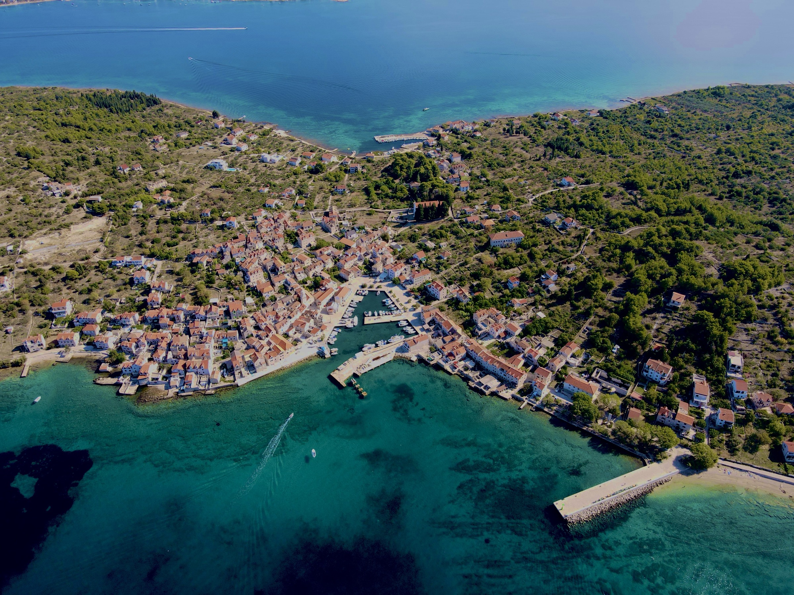
Otok na kojem vrijeme sporije teče
Žeravica se razgrne, čripnja podigne: zato se peka naručuje dan ranije.
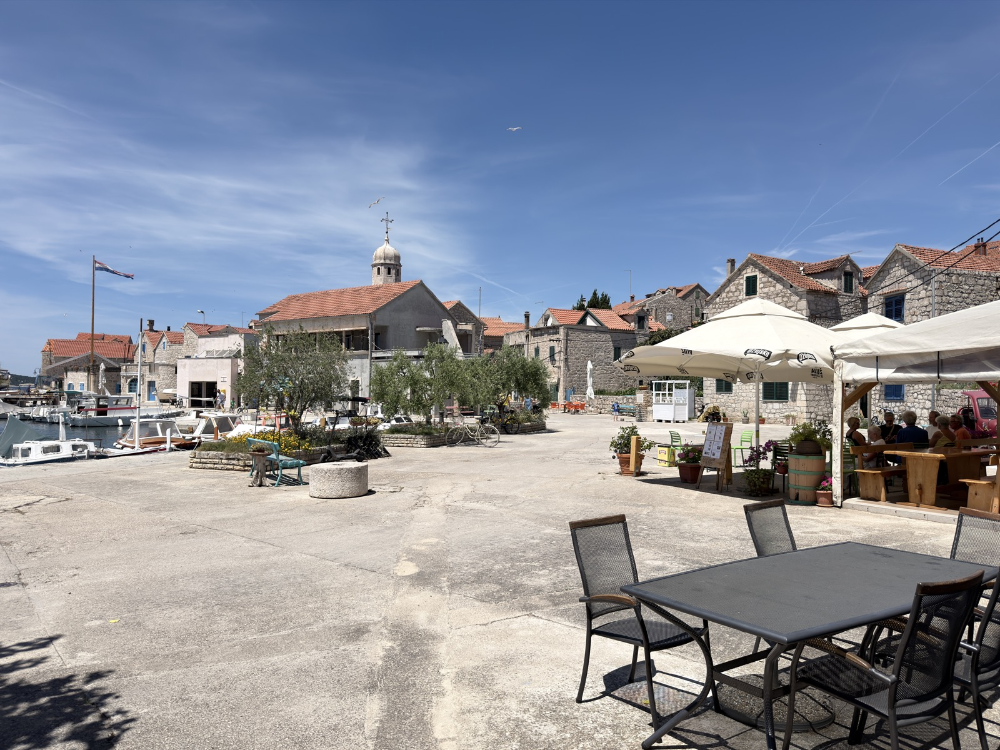
Već u srednjem vijeku Prvić je bio utočište šibenske aristokracije — mjesto kamo se bježalo od gradske vreve i od kuge s kopna. Plemićke obitelji Tavelić, Divnić, Šižgorić i Draganić-Vrančić gradile su ovdje ljetnikovce, a renesansni dvor obitelji Draganić-Vrančić stoji u Šepurinama i danas.
Stoljećima kasnije otok radi po istom receptu: strme kalete, zvono crkve i more koje sve nadglasava. Ovdje se ne dolazi slučajno. Dolazi se jer se traži upravo ovaj mir.
Bare je obiteljska konoba, ovdje od 2008. Kroz cijelu godinu vrata su otvorena kao caffe bar — mjesto gdje otok uspori uz kavu i more pred sobom. Ljeti postajemo konoba i pizzeria, za stolove pune gostiju koji su trajektom došli po taj isti mir.
Na stolu su hladne plate mora — slane srdele, marinirani inčuni, dimljena tuna, kuhana palamida i sabljarka, domaća riblja pašteta — uz pršut, sir i masline. Hobotnicu i meso ispod peke spremamo na narudžbu, dan ranije, jer dobre stvari ovdje znaju pričekati. A za dulji stol i cijelu obitelj, tu je i pizza.
Dobrodošli u našu konobu — i u naš otok.
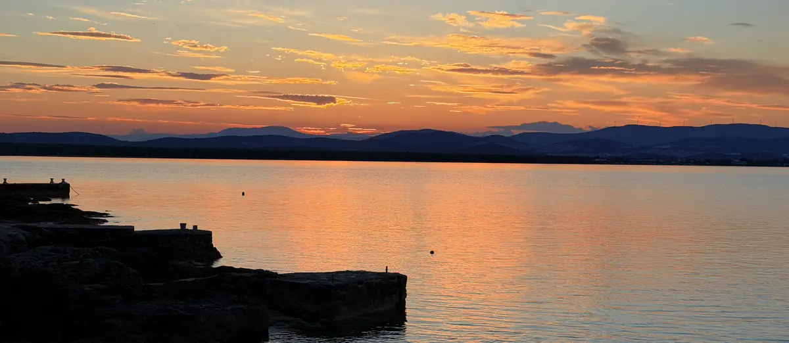
Prvić Šepurine
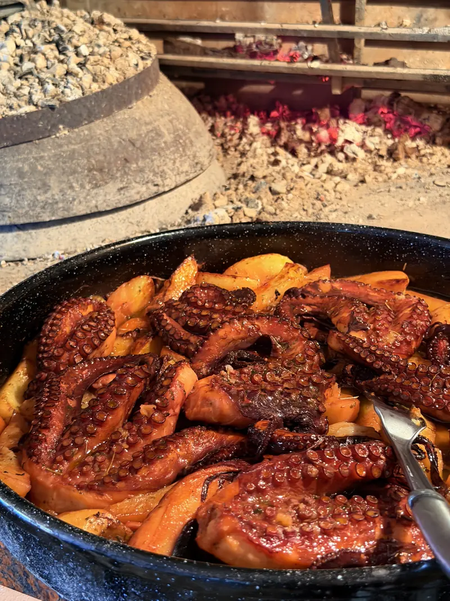
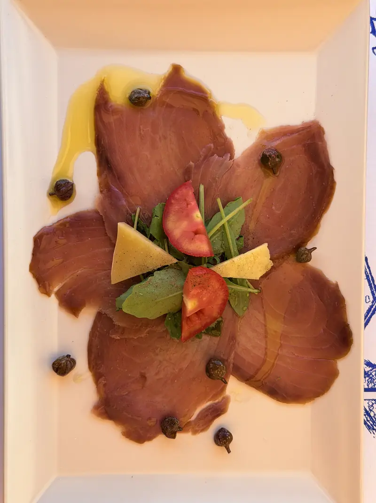
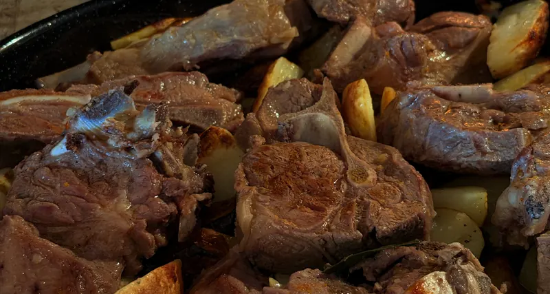
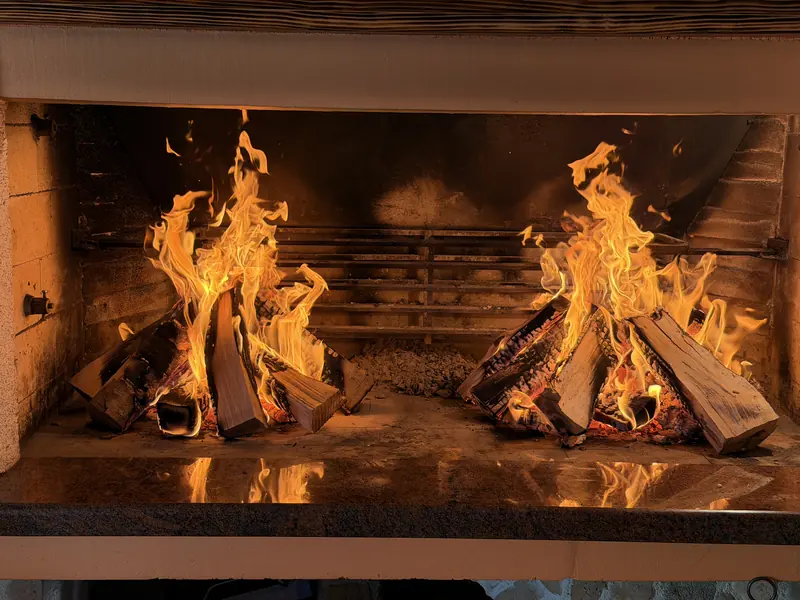
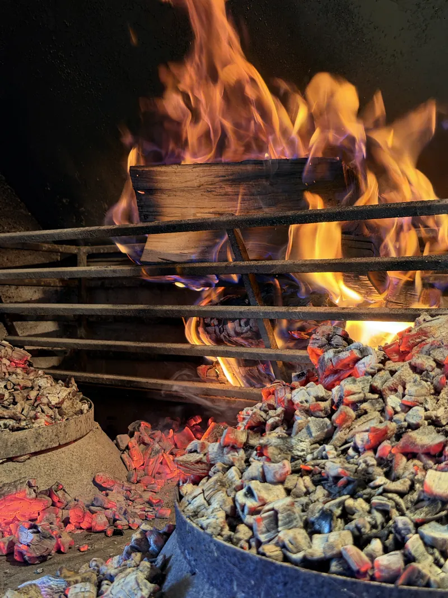
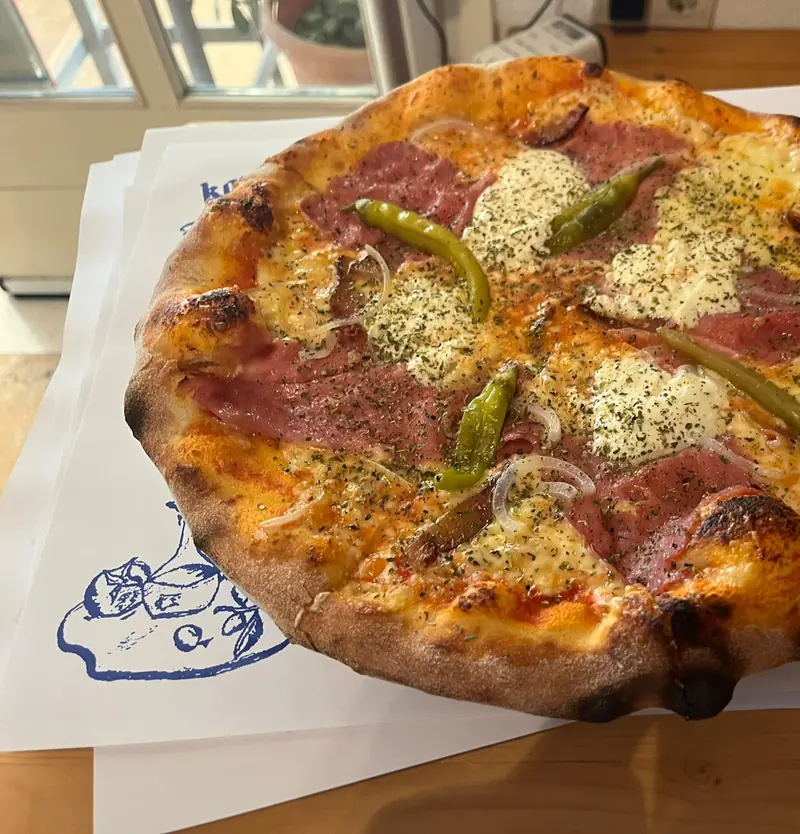
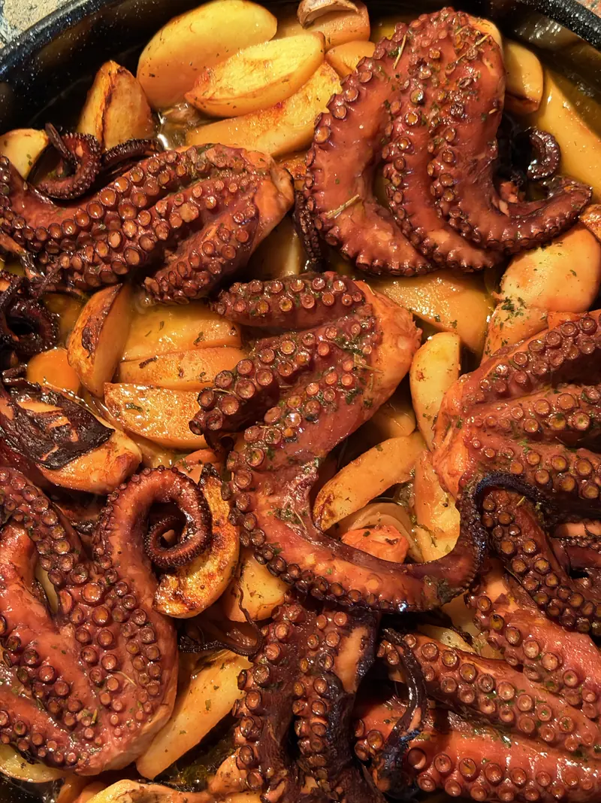
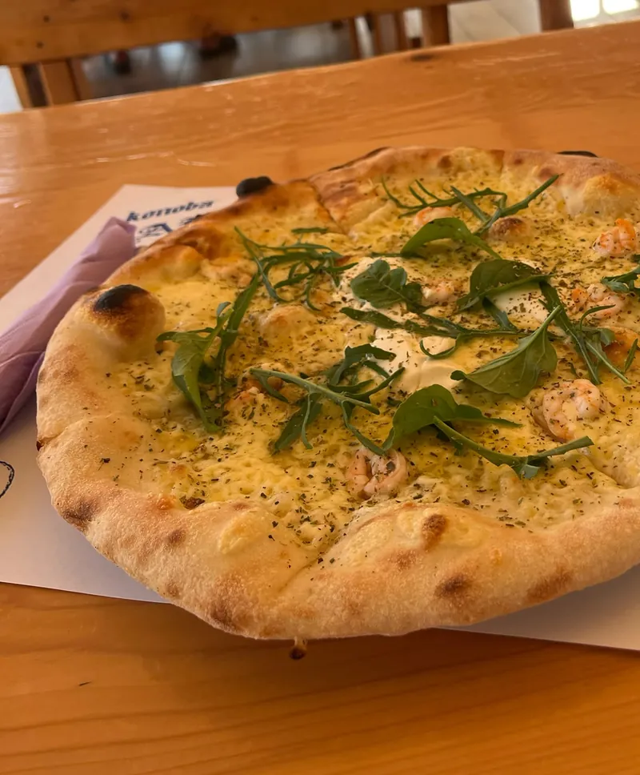
Konoba Bare nije samo stol uz more.
Našim brodom Bare istražite skrivene uvale Prvića i okolnih otočića vlastitim ritmom — tiho sidrište za kupanje, ručak na pučini, zalazak daleko od gužve.
Detalji plovidbe i cijena: na upit, telefonom ili za stolom u konobi.
Upit za najam · 022 448 094 Ili pitajte konobara kad sljedeći put sjednete: brod je vezan u luci, par koraka od stola.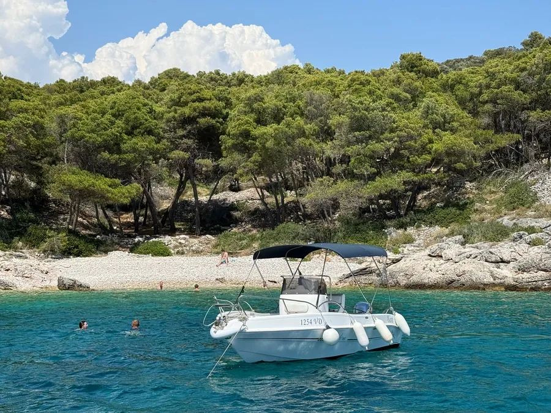
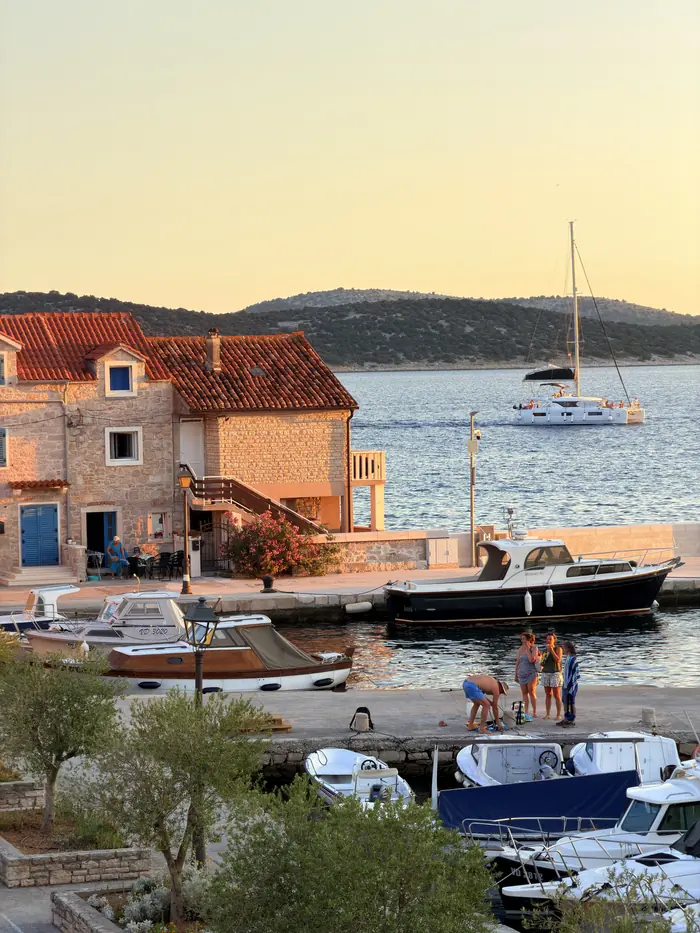
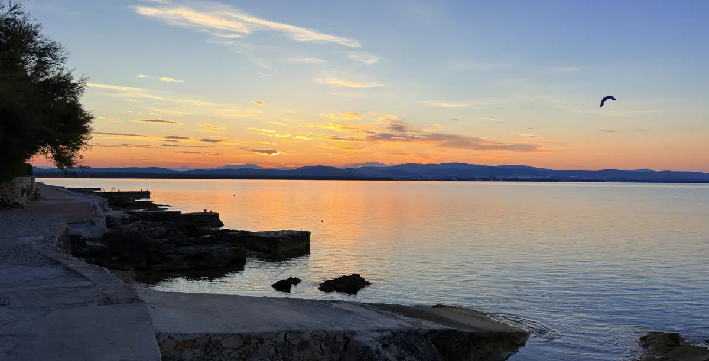
„Večer na Prviću ne traži ništa, samo da ostanete još malo.“
Prvić Šepurine, otok Prvić
Šibensko-kninska županija, Hrvatska
Otok Prvić nema automobila. Dolazi se redovnom trajektnom i brodskom linijom iz Šibenika i Vodica do Prvić Šepurina. Od pristaništa do konobe: kratka šetnja kalama.
Ljeti, kao konoba i pizzeria, svaki dan 12:00 – 23:00
Ostatak godine vrata su otvorena kao caffe bar, u ritmu otoka. Za veće stolove i peku javite se telefonom, uskladit ćemo i s rasporedom trajekta.
Telefon: +385 22 448 094